Verkefni 1
Vefsíðugerð
Fyrsta verkefnið í áfanganum Tölvustudd framleiðsla var að búa til vefsíðu til þess að skjala verkefni þessa áfanga og mögulega fleiri. Eftir áfangan getur þessi síða svo einnig nýst sem ferilmappa sem getur reynst vel í atvinnuleit og/eða umsókn í framhaldsnám.
Leiðbeiningar verkefnisins voru eftirfarandi:
Lýsing á verkefni - Búðu til vefsíðu sem hýsir þitt vinnuframlag (portfolio).
Veldu og smíðaðu html sniðmát fyrir vefsíðuna þína, skipulegðu hana með upplýsingum um þig og þína ferilskrá.
1. Skrásettu ítarlega hvernig þú framkvæmdir fyrsta verkefnið í máli og myndum þar sem eftirtaldið kemur fram:
- - Hvaðan þú sóttir sniðmátið og/eða innblástur, útskýrðu ákvarðanatöku.
- - Hverjar eru hönnunarforsendur í upphafi, t.d. hvernig hægt er að finna undirsíður, litaval eða annað sem hugsað var út í.
- - Hvernig var staðið að myndvinnslu fyrir síðu, t.d. hvernig myndir og skjáskot voru smækkaðar og unnar fyrir verkefnið.
- - Notaðir þú önnur forrit eða fannstu aðrar upplýsingar til að vinna verkefnið? Segðu frá.
2. Segðu frá hvað þú vilt fá út úr áfanganum og veltu fyrir þér hvað þú myndir vilja gera sem lokaverkefni.
3. Útskýrðu hvernig þú hlóðst upp síðunni á Github, hvort þú notaðir git bash eða aðra aðferð. Segðu frá þeim áskorunum sem þurfti að takast á við og hvernig var leyst úr þeim. Settu hlekk inná github repositoryið inná vefsíðuna sjálfa.
Leyfilegt er að gera vefsíðuna á Ensku eða Íslensku.
Forrit
Byrjað var á að sækja forrit sem talin voru nauðsynleg. Git var halið niður af git-scm.com og brackets af brackets.io . Til þess að ná að nýta Brackets þarf einnig að vera með vafra. Þá er hægt að sjá breytingar sem eru gerðar í beinni. Ég notaði Google Chrome.
Github uppsetning
Þá var búið til repository á github.com en það var gert með því að smella á græna hnappin sem stendur new á eins og sést á eftirfarandi mynd. 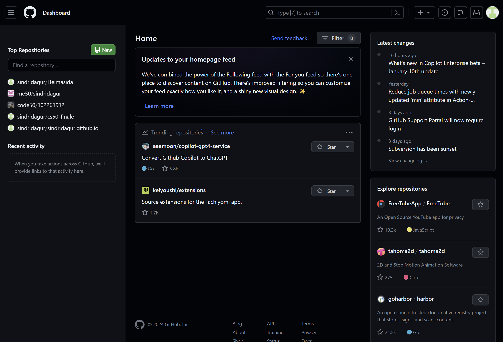 Mitt repository var skýrt "Heimasida" og má finna hér. Á eftirfarandi mynd má sjá valmyndina sem kemur upp þegar ýtt er á takkann til að búa til nýtt repository. 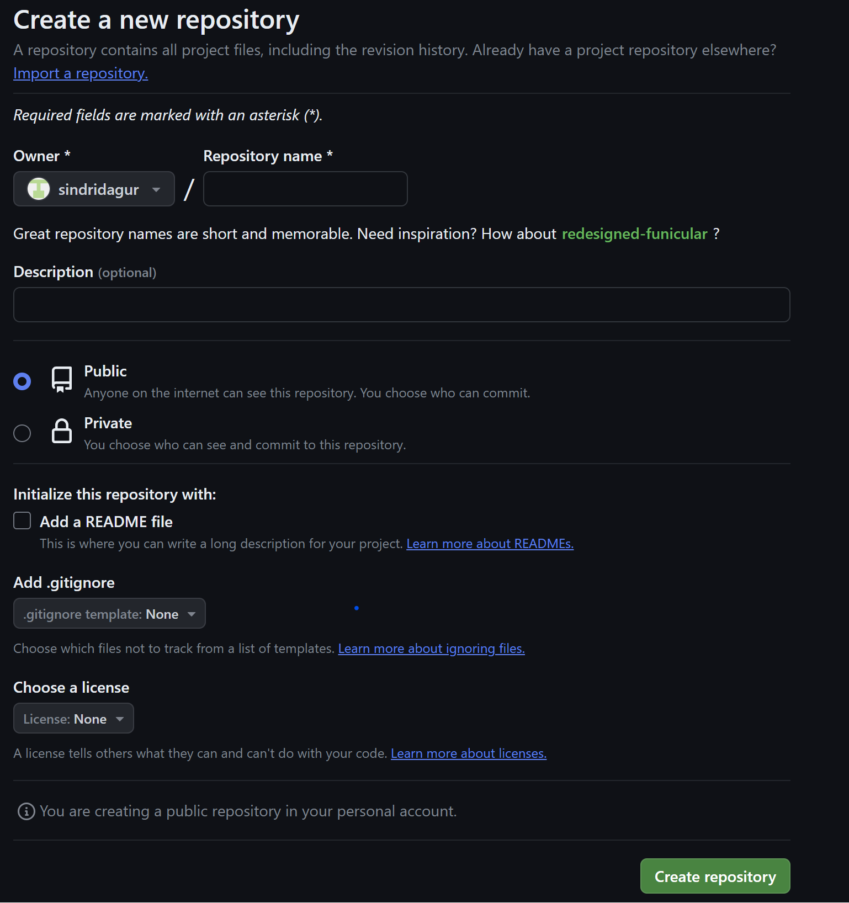 Ég skýrði það sem sagt Heimasida og hélt mig við að hafa það public samkvæmt leiðbeiningum kennara. Ég bætti við README skrá, þó það sé enn óákveðið hvort hún verði notuð. Öðrum stillingum var ekki breytt í bili.
Tengjast Github með Git
Git er mjög öflugt verkfæri í hugbúnaðarvinnu. Til þess að komast vel inn í hvernig það virkar og hvernig ætti að nota það svo það nýtist sem best mæli ég með að skoða bókina Pro Git. Hún er til sem netbók og segir frá flestu sem þarf að vita um Git. Fyrstu 3 kaflarnir í bókinni duga þó til að öðlast nokkuð góðan skilning á þessu verkfæri. Ég notaði einnig "svindlblað" til þess að minn mig á skipanirnar. Ég fann það með því að googla "git cheat sheet" og má sjá það hér.
Ég mun þó segja frá því helsta sem ég gerði. Fyrst þarf að velja möppu lókalt (e. locally) til þess að vinna í skránum sem eru á Github. Síðan þarf að fara þangað í skelinni sem þú kýst að nota. Ég notaði git-bash af því ég er vanur tungumálinu. Til þess að komast í möppuna er annaðhvort hægt að fikra sig áfram með skipunum eða fara í möppuna í File Explorer, hægrismella og ýta á "Open Git Bash here" eins og má sjá á myndinni hér að neðan.
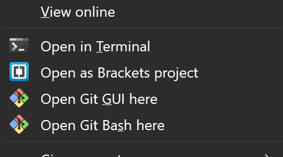Þá þarf að segja skelinni hvað þú heitir og hvert emailið er svo Git geti haldið utan um hver er að gera breytingar á skjölum (kannski ekki nauðsynlegt í þessu verkefni en góð venja). Svo þarf að tengja lókal möppuna við Github. Það er gert með því að skrifa git clone og svo slóðina að Github repository. Hérna er skjáskot af því hjá mér.
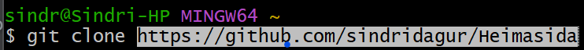Svo til þess að fullvissa mig um að þetta virkaði setti ég pdf af ferilskránni minni í Git möppuna og hlóð því upp á Github. Það er gert með því að skrifa eftirfarandi. Það sem þarf að skrifa er undirstrikað með rauðu.
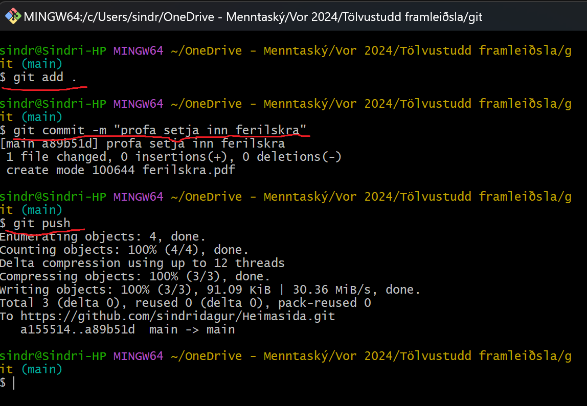Þett er svo það sem þarf alltaf að skrifa þegar hlaða á breytingum upp til Github. Ég mun ekki minnast á það þegar ég geri það. Hver og einn verður að meta það hversu oft hann telur þörf á að gera það.
Val á template fyrir heimasíðu
Ég notaði síðuna html5up til þess að velja mér template. Það template sem varð fyrir valinu hjá mér heitir Halcyonic og má sjá hvernig það lítur út án breytinganna minna hér. Ég valdi það vegna þess að mér fannst það einfalt en samt elegant. Mörg hinna fannst mér "too much". Markmiðið mitt með heimasíðunni er að sýna verkefnin mín í áfanganum Tölvustudd framleiðsla og seinna meir önnur verkefni sem ég er stoltur af. Ég er ekki að reyna að sýna hæfileika mína sem grafískur hönnuður heldur vil ég að þau sem heimsækja síðuna mína skoði verkefnin sem ég er að sýna í mínimalístísku umhverfi.
Breytingar á sniðmáti
Nav-bar
Ég hef nokkura reynslu í html og css svo ég þurfti lítið að googla, heldur fiktaði mig frekar áfram. Ég byrjaði á að skipuleggja hvaða síður ég ætlaði að hafa og hvernig ætti að fara á milli þeirra. Ég ákvað að hafa forsíðu, 4 síður fyrir verkefnin í áfanganum Tölvustudd framleiðsla, eina fyrir ferilskrá og eina fyrir verkefni sem ég er mjög stoltur af úr Tölulegri burðarþolsgreiningu. Þá vildi ég einnig hafa hlekk á github repository í nav bar. Þá setti ég þessa hluti í nav barið og setti titilinn sem Sindri Dagur Sindrason. Útkomuna má sjá hér á eftir, bæði eins og það kemur út á tölvuskjá og hvernig það kæmi út á mjórri skjá. Á mjórri skjá er hamborgaravalmynd og var það hluti af virkni sniðmátsins.
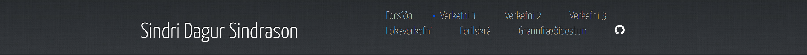
HTML kóðinn endaði þá svona:
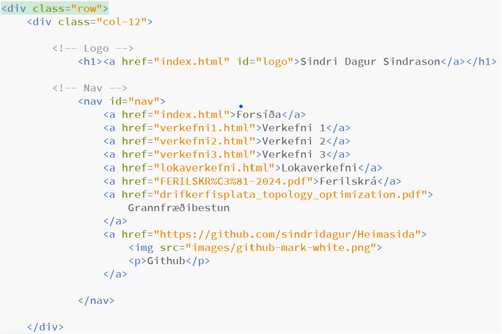Ég tók Github lógoið af heimasíðunni þeirra. Ég þurfti að breyta css kóðanum líka aðeins því hlekkirnir í nav barinu fóru yfir "Sindri Dagur Sindrason" titilinn af því ég var með fleiri hlekki en upprunalega vefsíðan. Breytinguna á css kóðanum má sjá hér:
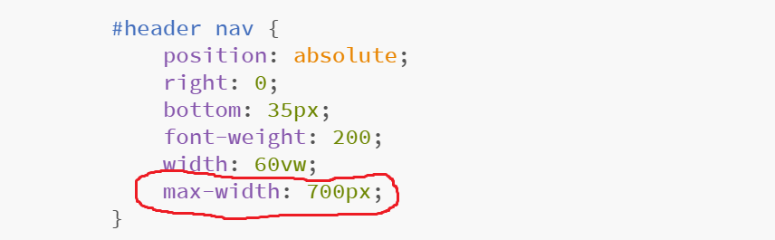Með þessu tryggði ég að valmyndin og titillinn skarast ekki á hvert annað. Annað vandamál kom þegar ég setti Github merkið í valmyndina. Það er JavaScript kóði sem tekur textan úr valmyndinni og setur hann í hamborgaravalmynd. Kóðinn lenti í vandræðum með github merkið af því það var ekki texti. Ég ákvað því að setja texta líka í hlekkinn eins og má sjá á myndinni með html kóðanum. Svo notaði ég css til þess að fela hann þegar verið er að nota breiðu valmyndina. Javascript fann samt textann í html kóðanum og setur hann í hamborgaravalmyndina. Svona faldi ég textann í breiðu valmyndinni með css:
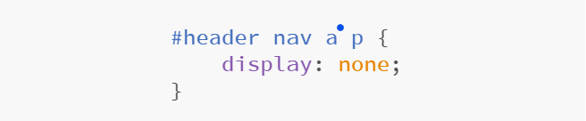Ég notaði svo sama html kóða fyrir valmyndina í öllum html skjölunum mínum.
Footer
Ég eyddi mjög miklu úr footer, sérstaklega á forsíðunni. Eina sem ég skildi eftir á öllum síðunum var eftirfarandi. Ég Vildi sem sagt halda inni credit til þeirra sem bjuggu til þetta template.
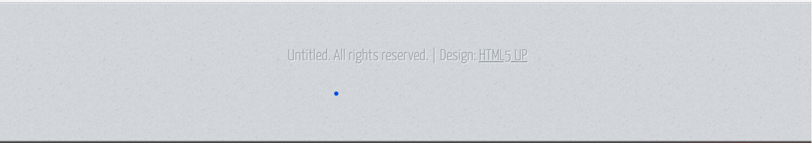Og html kóðinn fyrir footer er hér:
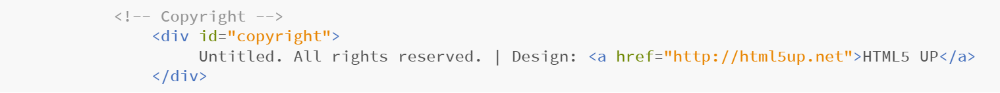Forsíða
Forsíðan endaði svona:
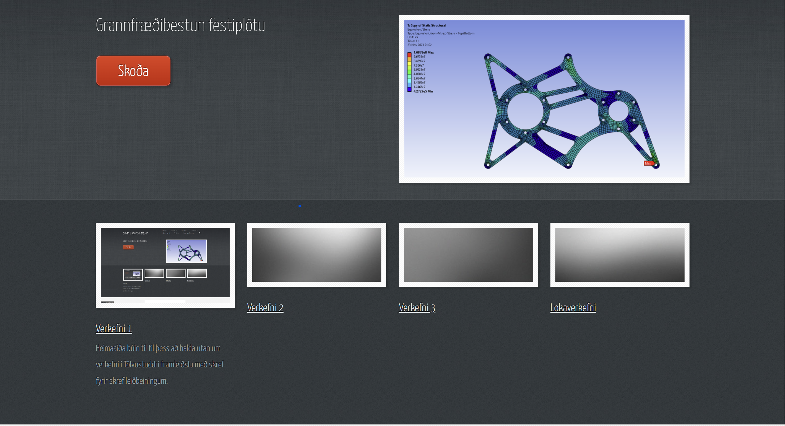 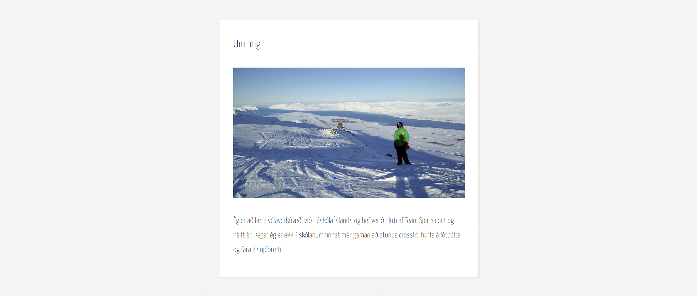Ég gerði ekki mikið á forsíðunni. Ég tók nokkra hluta út og breytti öðrum hlutum til þess að sýna verkefnið mitt í Tölulegri burðarþolsfræði, þetta verkefni og 3 önnur verkefni í áfanganum Tölvustudd framleiðsla.
Myndir
Þegar ég setti inn myndir á forsíðunni notaði ég kóðan sem var fyrir og breytti bara slóðina á myndirnar sem ég var búinn að sækja og setja í images möppuna. Þegar ég setti inn myndir á þessa síðu (Verkefni 1) skoðaði ég hvaða leiðir voru í boði með hjálp css kóða þessa templates og komst að því að besta leiðin væri að hafa tómann hlekk því það var búið að skrifa class fyrir mynd inn í hlekk sem ég gat notað. Kóðinn varð þá svona:
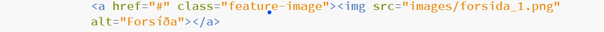Þessi síða (Verkefni 1)
Ég eyddi fyrst óvart út öllum síðum af template kóðanum nema "Three Column" og eins og nafnið gefur til kynna er sú síða með þrjá dálka. Ég byrjaði á að nota miðjudálkinn en þegar ég var kominn vel á leið áttaði ég mig á því að ég vissi ekkert hvað ég ætti að setja á hina dálkana. Þess vegna ákvað ég að reyna að gera það þannig að það væri bara einn dálkur. Ég skoðaði aftur hið upprunalega template og sá að á því var síða sem hét "One Column" og skoðaði því html kóðann á henni. Ég komst að því að það var í raun mjög einfalt að breyta úr 3 í einn dálk. Einungis þurfti að breyta einum class fyrir div-skipun, úr "col-6 col-12-medium imp-medium" í "col-12".
Þá notaði ég sections til þess að skipta síðunni upp eins og sjá má hér fyrir ofan, t.d. á milli hlutanna "Val á template fyrir heimasíðu" og "Breytingar á sniðmáti"
Væntingar mínar til áfangans
Ég er mjög spenntur fyrir námsefni þessa áfanga, sérstaklega fyrir hlutanum sem snýr að geislaskurð og fræsingu. Ég veit ekki alveg hvað ég vil gera sem lokaverkefni en vonast eftir því að fá innblástur eftir því sem líður á önnina.